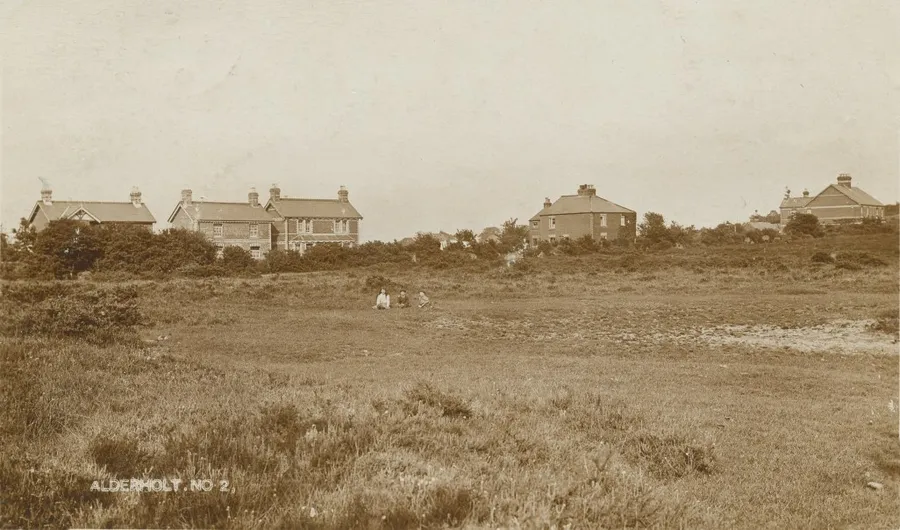
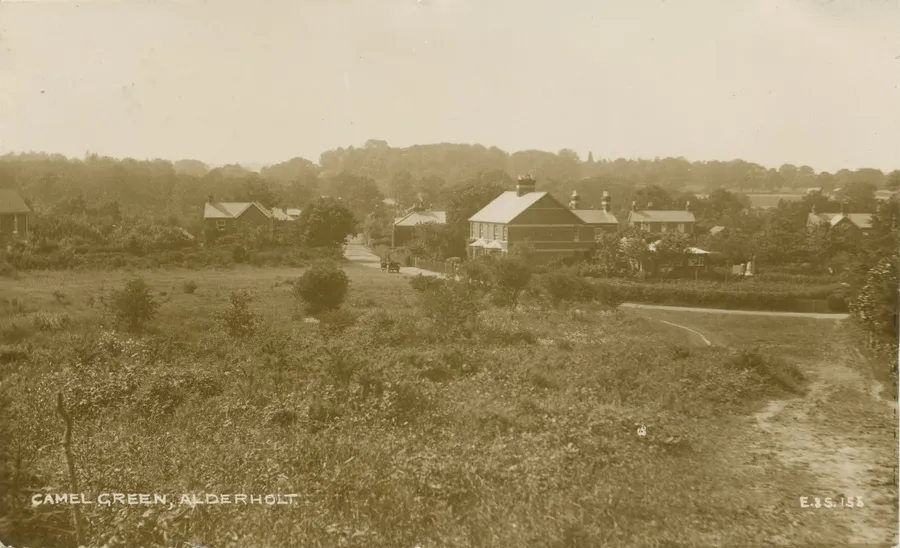
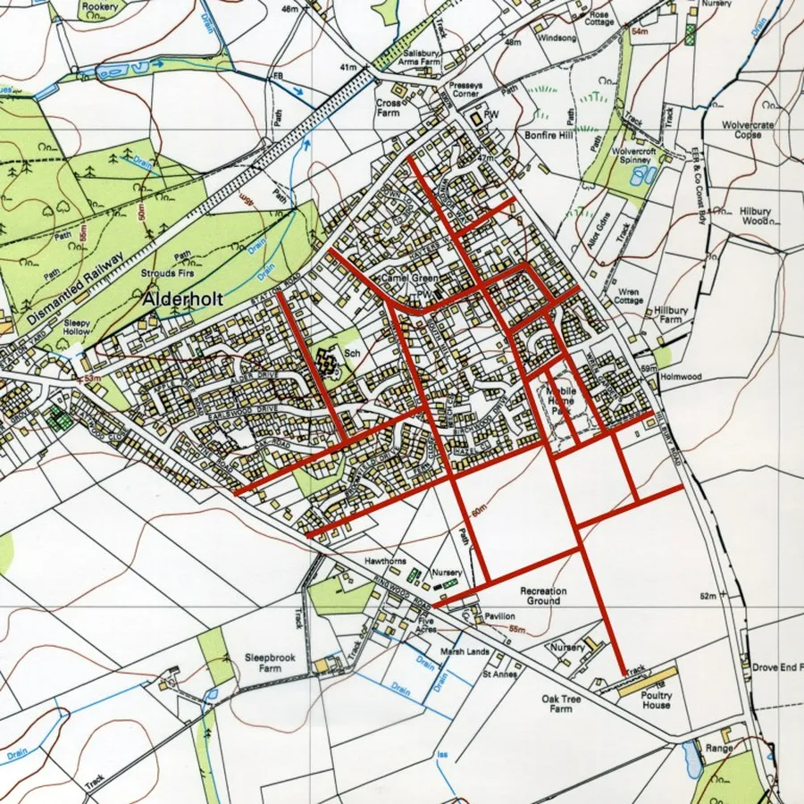
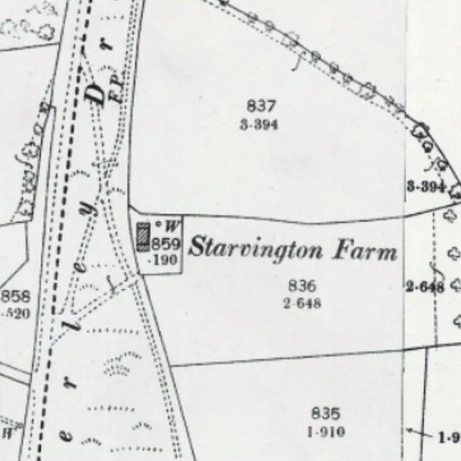
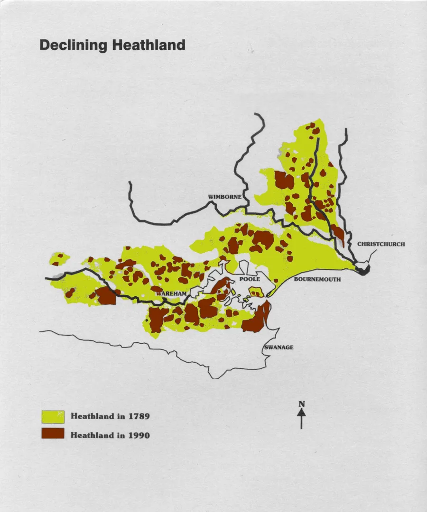
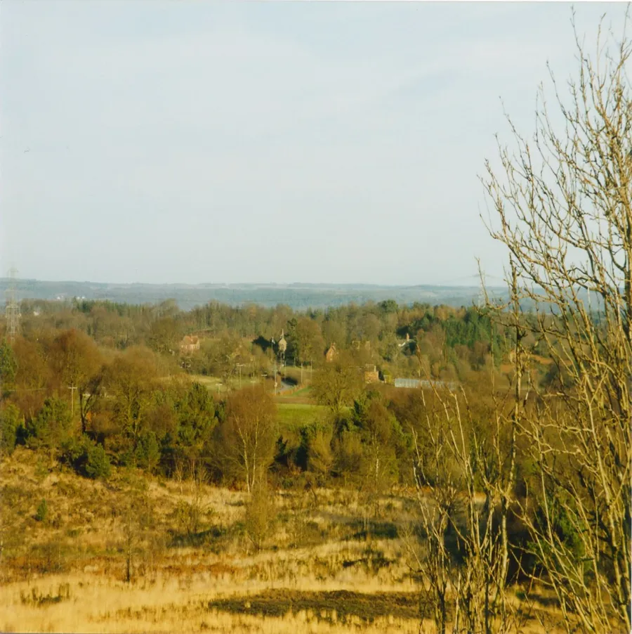

Enclosures and Commons
by Adrian King

Enclosure is the conversion of landholding and agricultural practice from open field farming to severalty — privately held land not subject to any form of common right. Not everyone was happy with this. John Clare wrote
There once was lanes in nature’s freedom dropt,
There once was paths that every valley wound,
Inclosure came and every path was stopt;
Each tyrant fixt his sign where pads was found
To hint a trespass now who cross’d the ground:
Justice is made to speak as they command
The high road now must be each stinted bound:
Inclosure thou’rt a curse upon the land
And tastless was the wretch who thy existence plann’d.
(Early Poems, II, 170)

In 1848 the population of Alderholt was 404. Most were living along Alderholt Street now Sandleheath Road and at Alderholt Corner now Presseys Corner. If you stood at Presseys Corner 170 years ago and looked over what is now Windsor Way you would see a different scene than you see today. You would be facing an area of Heathland. The track that is now Station Road ended on the Heath after a short distance.
This part of the Alderholt Heath in the southern part of the parish was enclosed by act of parliament in 1858 and divided up into large near-rectangular fields of two to twenty acres. This action provoked much opposition among the cottagers as they took it as an invasion of their common rights. The cottagers were farmers who had leased plots of land on lives on easy terms from the Lord of the Manor and the life could be renewed on payment of a fine.

Upon their holdings the people built a cottage and though they may have had to toil as hard as any labourer there was a feeling of independence. The house often a poor one with mud wall was their own in a sense. So were the fields which they or their fathers had enclosed from the surrounding wastes of heath and furze. From this waste they eked a living. But enclosure changed all this. As they fell the holdings were attached to adjacent farms and the cottages allowed to tumble down.

A typical example is that of Starvington Farm on Batterley Drove. It is long since gone and the land attached to another farm.
With the building of the new road along the northern edge the freeholders began to build many cottages. Among these the largest landowners were Mr. Churchill and Lord Salisbury.

As more land was enclosed more cottages were built. Alderholt Street ceased to be the main area of population and settlement along the Fordingbridge – Cranborne road became the village centre. Most of the enclosed land has been in-filled with the developments of the last thirty years but it was still possible to trace the original field boundaries in the 1960’s but it is beginning to get harder.

But there still existed plots of land not owned by anybody where common law still stood. Rodney Legg says in Dorset Commons and Greens
“What is remarkable is that so little of Dorset Heaths were protected under the commons registration act 1965. The result is that in 200 years 130 square miles of heathland has been lost to development.”
Rodney Legg also said that:
“Alderholt was the most vigilant parish in the county during the commons registration of 1967 – 70.”

Commons and Greens in Alderholt
- Bridleway Green – 1.5 acres of an old roadside green beside bridleway 26 (Sandy Lane) near Cripplestyle – VG 34
- Cripplestyle Chapel – 0.2 acres adjoining the Ebenezer Memorial Garden at Cripplestyle – CL 161
- Grass Triangle (1) – 0.03 acres of grass triangle at the Alderholt Park Lodge near Home Farm – VG 33
- Grass Triangle (2) – 0.05 acres of grass triangle at the entrance to Wolvercroft Garden Centre – CL 160
- Home Farm Pond – 0.17 acres at the Home Farm Pond – CL 163
- King Barrow Hill – 23.62 acres at King Barrow Hill – CL 253 and CL 162
- War Memorial – 0.05 acres at the War Memorial – CL 159
- Wastelands – 34.1 acres of wasteland in Cranborne and Alderholt Parishes in an extensive pattern of roadside verges and includes Crendell Common – CL 127
